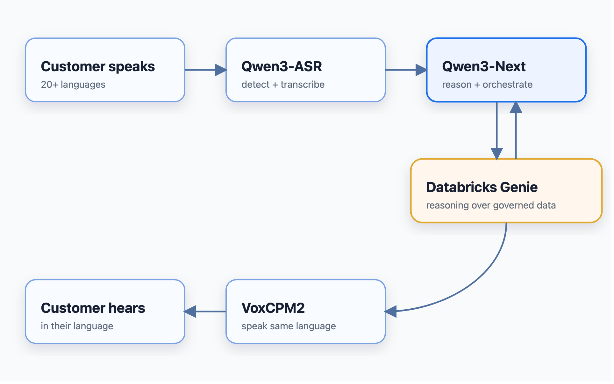

Powering Genie with Open-Source Voice Models on Databricks
Databricks Genie answers business questions by reasoning over governed data: you ask in plain language, and it plans the query, runs it against Unity Catalog tables, and returns an answer it can explain. That works beautifully in a browser. It does nothing for the customer who has picked up the phone and is speaking Thai.
To bring Genie's reasoning to a live call, Genie needed two things it did not have: the ability to *hear* a customer in whatever language they speak, and the ability to *answer* out loud in that same language, fast enough to feel like a conversation. Neither is a reasoning problem — they are speech problems. So the interesting question was which speech models to put around Genie, and how to serve them.
We chose open-source models — Qwen3-ASR for speech-to-text and VoxCPM2 for text-to-speech — with Qwen3-Next as the reasoning stage that connects the conversation to Genie. This post is about why those models, how they give Genie a multilingual voice, and what we learned serving them on Databricks. It is not a fine-tuning story; the models are used as they ship.
Key Highlights
- Open-source voice models let Databricks Genie answer out loud, in the caller's language, in real time.
- Qwen3-ASR (speech-to-text) covers around 30 languages and auto-detects which one the caller is speaking.
- VoxCPM2 (text-to-speech) also covers around 30 languages; the set the product actually supports end to end is the *intersection* of the two.
- Qwen3-Next is the reasoning and orchestration stage, chosen because it was the fastest option that also supports tool-calling and generation control — the two things needed to reach Genie mid-call.
- Genie supplies the reasoning over governed data; the voice models make that reasoning conversational.
- All three run on Databricks Model Serving as MLflow
ResponsesAgentendpoints — open models, one governed platform. - The system is exposed as three realtime WebSocket APIs: speech-to-text, a full speech-to-speech loop, and text-to-speech.
The Problem: Genie Could Reason, But Not Listen or Speak
Genie's strength is reasoning over governed data. But a live, multilingual phone call asks three questions a dashboard never has to:
- Can we hear the customer accurately in whatever language they speak — without knowing that language in advance?
- Can we answer with Genie's reasoning, spoken back in that same language, fast enough to hold a conversation?
- Can we do it with models we can serve and govern ourselves, rather than a separate black-box API for every language?
Those questions decided the model choices more than any leaderboard did. What we needed was broad language coverage, tool-calling, low latency, and the ability to run everything under one governance model on Databricks.
How a Multilingual Turn Works

The customer speaks; Qwen3-ASR detects the language and transcribes it; Qwen3-Next interprets the request and, when it needs a grounded answer, asks Genie in natural language; VoxCPM2 speaks the reply back in the caller's language. The language is carried end to end, so a Thai question gets a Thai answer.
The Design Principles
- One multilingual stack, not one per language. A single model that covers many languages is far less to operate — and to govern — than a fleet of per-language endpoints.
- Open models we can serve and govern. Running the models ourselves on Databricks keeps audio, versioning, and access control inside one platform, next to Genie and the governed tables.
- Genie for reasoning; the models for hearing and speaking. The speech models are deliberately not asked to reason about the business — that is Genie's job.
- Cover latency, do not just chase it. Some grounded answers are slow; the design keeps the conversation moving rather than pretending latency is zero.
- Follow the caller's language automatically. Detection, not configuration, decides what language a turn is in.
Why These Models
Speech-to-text: Qwen3-ASR
The speech-to-text model has the hardest job in a multilingual contact center, because it has to get business entities right — invoice numbers, amounts, names — in a language it was not told to expect. We chose Qwen3-ASR-1.7B for two reasons: it covers roughly 30 languages in a single model, and it auto-detects the spoken language, returning the detected tag so the rest of the pipeline can follow it.
The simpler alternative was a commercial per-language speech API. That is quick to wire up, but it means a vendor black box per language and coverage that varies market to market. One open multilingual model, served on our own endpoint, gave us consistent behavior and governance across every language we support.
Text-to-speech: VoxCPM2
For the voice, we chose VoxCPM2, which also covers around 30 languages from a single model and synthesizes natural speech directly from text without a per-language configuration. Because a language needs *both* recognition and synthesis to complete a round trip, the set the product actually supports end to end is the intersection of Qwen3-ASR's languages and VoxCPM2's — a point worth stating plainly, because a model card's language count is not the same as what you can support in a conversation.
The trade-off, as with the ASR model, is that we run it on GPU serving rather than calling a metered API. In return the voice stays open, governable, and consistent with the rest of the stack.
Reasoning and orchestration: Qwen3-Next
The middle stage interprets the transcript, decides when to reach for Genie, and composes the reply. Here the deciding factor was not language coverage but capability and speed. We benchmarked candidates across English, Thai, Indonesian, and Chinese, and Qwen3-Next-80B was the fastest option that *also* supported tool-calling and honored generation controls — roughly 1.17s median response time versus about 2.63s for a frontier alternative that additionally rejected the temperature parameter we needed.
Tool-calling was non-negotiable: it is exactly how this stage reaches Genie. When the caller asks an analytical question, Qwen3-Next hands it to Genie in natural language, Genie reasons over the governed data, and the answer is spoken back — in the caller's language.
Serving all three on Databricks
Each model is packaged as an MLflow ResponsesAgent on the Databricks Agent Framework, registered in Unity Catalog, and served on GPU compute, with the audio carried inside the request. That put the open-source voice models under the same governance and lineage as Genie and the tables it reasons over, instead of three separately operated services.
Architecture at a Glance

Left to right: the browser streams audio over a WebSocket to a FastAPI realtime API that exposes three capabilities. Each capability calls a Databricks Model Serving endpoint running an open-source model as an MLflow ResponsesAgent. The reasoning stage reaches Genie for grounded answers over governed data, and synthesized speech streams back — everything that makes the call understand and reason lives inside the governed Databricks layer.
A Call, End to End
A customer calls and, in Thai, says a late fee looks wrong.
Qwen3-ASR detects Thai and returns the transcript with the invoice number intact. Qwen3-Next reads it and asks Genie for the account's grounded billing facts; Genie reasons over the governed tables and returns the answer. Qwen3-Next composes a short reply, and VoxCPM2 speaks it back — in Thai. The customer never had to switch languages, and the number they heard came from governed data, not from a model's guess.
What It Does Not Do
The boundaries are deliberate:
- It does not fine-tune the models. They are served as they ship; adapting them to a domain is separate work.
- It does not handle telephony yet. The realtime path expects browser-quality audio at 16 kHz; narrowband 8 kHz phone audio, where some of these models degrade, is future work.
- It does not let the models invent facts. Grounded answers come from Genie over governed data; the human agent stays accountable.
Lessons Learnt
Grounded in what we actually measured and observed building this:
- Language coverage lives at the intersection. Qwen3-ASR and VoxCPM2 each list around 30 languages, but the set you can truly support end to end is where they overlap. Plan around the round trip, not the model cards.
- Tool-calling and generation control decided the LLM, not raw quality. Qwen3-Next won because it was fast *and* callable: about 1.17s median versus roughly 2.63s for a frontier alternative that also refused the
temperaturecontrol the loop relied on. - Diffusion steps are a real quality-vs-latency knob. We profiled the text-to-speech model at 4, 6, 8, and 10 inference steps; six held full multilingual quality — including Thai — at the lowest safe latency on GPU_MEDIUM, and fewer degraded Thai first.
- Realtime is a systems problem. Once the models were good enough, the work was latency, streaming, and warm-up — not accuracy. Covering a slow grounded turn with a natural spoken acknowledgment did more for the experience than any raw speedup.
- Telephony is still a gap. Browser audio is 16 kHz; real phone audio is 8 kHz, and some of these models degrade badly on it. We call that out rather than pretend it is solved.
Future Direction: The Genie Agent API
Today the reasoning stage calls Genie through its Conversation API for one analytical question at a time. The natural next step is the Genie Agent API — using Genie as a first-class reasoning agent within the call rather than a single-shot query, so it can carry out deeper, multi-step reasoning ("Genie Agent mode") without leaving the conversation. Alongside that, telephony support — narrowband audio handling and phone-band-robust models — and barge-in, so a caller can interrupt the reply. In every case the loop stays the same: hear the customer in their language, reason with Genie over governed data, and answer out loud.
Closing Thought
The open-source models here were chosen for one purpose: to let Genie's reasoning reach a customer in their own language, in real time, on a platform we can govern. Qwen3-ASR gives Genie multilingual ears, VoxCPM2 gives it a multilingual voice, and Qwen3-Next connects the conversation to Genie's reasoning.
The models were the accessible part. Making them work together — across languages, fast enough to feel live, and grounded in governed data — was the engineering, and it is the part worth getting right.